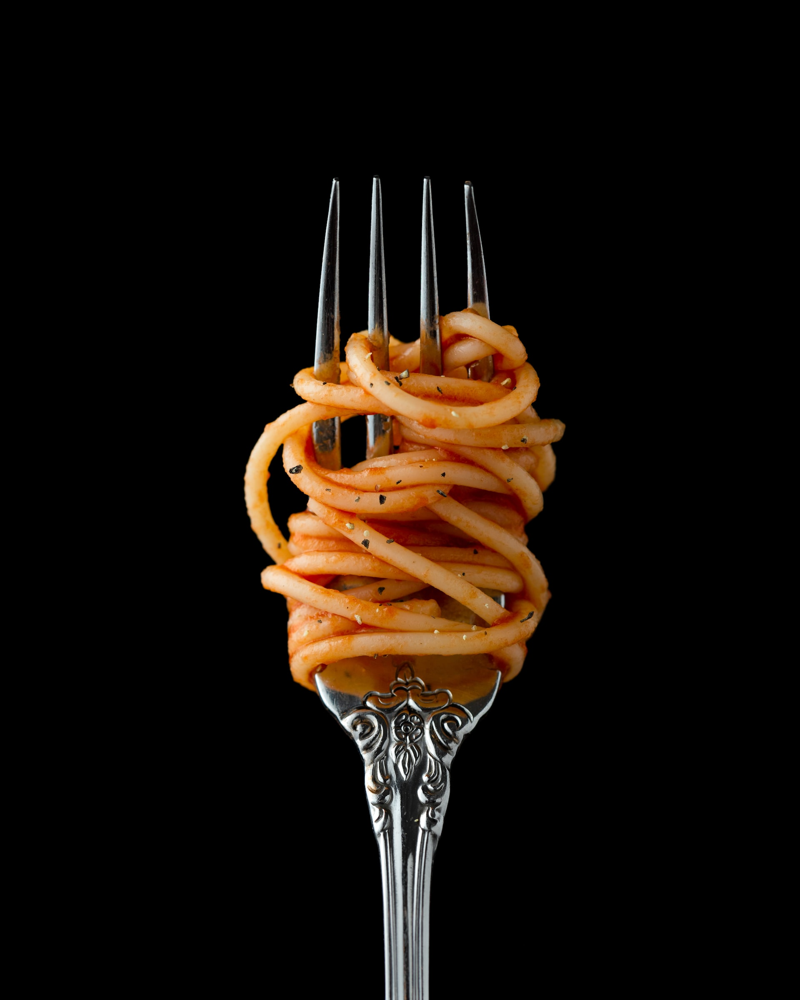

Easy Spaghetti

Quick Vegan Dish
Everyone's parents or grandparents have a spagetti recipe. This usually involves
a long endevour or sourcing many ingredients and maticulously forming meatballs width
your hands. This is no such recipe. Our easy spahgetti recipe takes no time at all and
may just be the recipe you hand down to your children.
- Jar of spahgetti sauce
- 1/2 yellow onion
- 3 cloves garlic
- one pound of ground beef
- spaghetti noodles
- Italian seasoning
- pepper
- salt to taste
Steps
- chop and add onion to large pot
- sautee in olive oil for 3 min
- Add ground beef and cook fully
- just before beef is done add garlic
- pour spaghetti sauce in and simmer for 20 min
- Cook noodles
- ENJOY!
BACK TO RECIPES